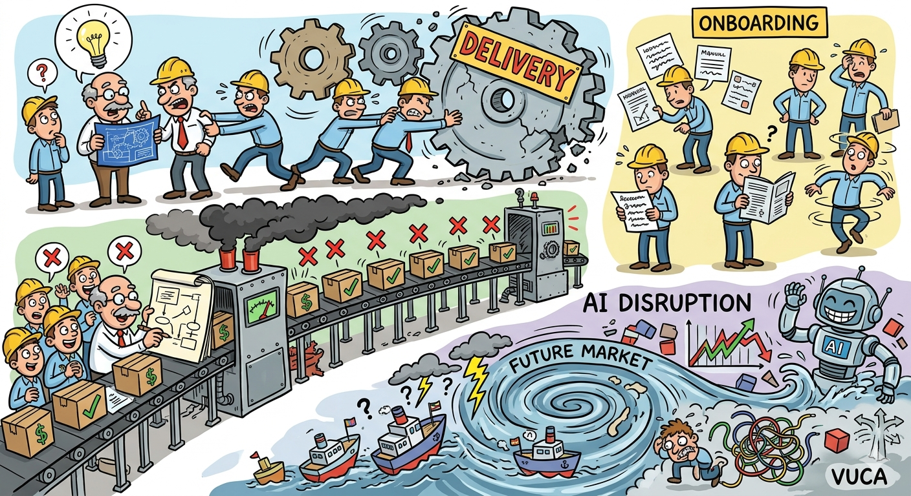
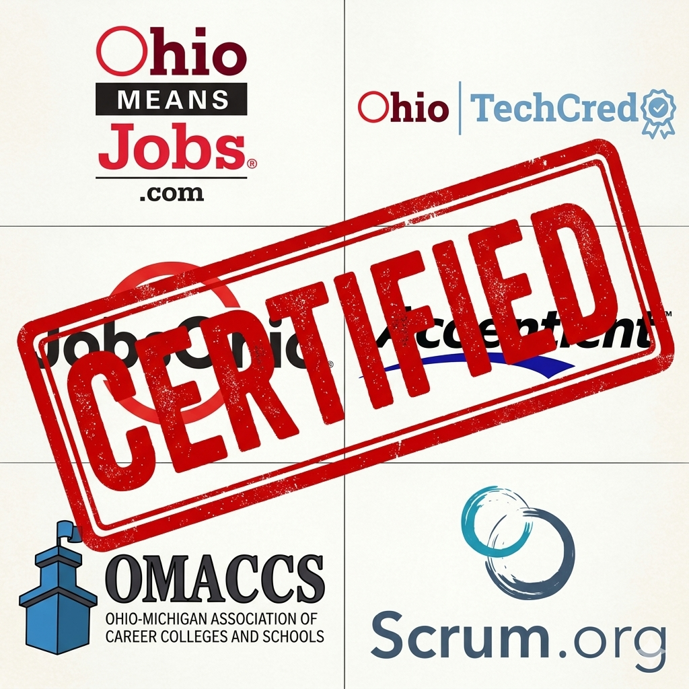
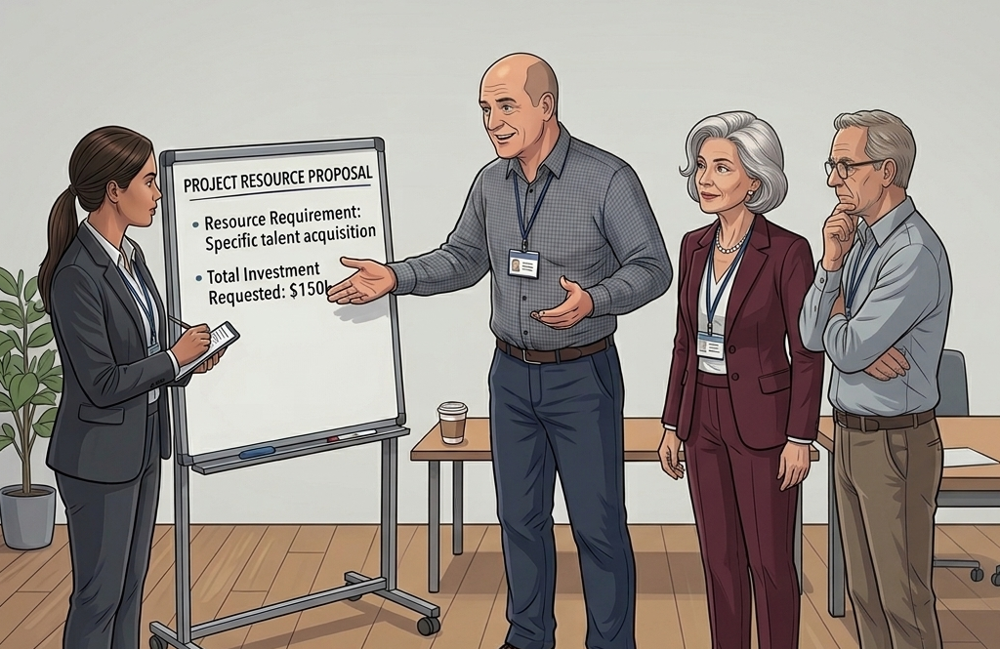

April 2026
The Gap:
In this uncertain time, IT managers of SMEs find themselves helpless as their teams lose 20% business throughput per additional project and struggle with skills misaligned to evolving business needs releasing brittle software.

The solution: NextGenTalent Lab
A funded 16-week mentored apprenticeship that converts inexperienced talent into autonomous, high-value production-grade professionals for IT Managers of SMEs.
| Stakeholder | Profile & Value |
|---|---|
| The Buyer | IT Managers at Ohio SMEs (11-200 staff). |
| The User | Mid-career and junior talent scaling technical and effective skills. |
| The Supplier | Workforce Grant Partners (OMJ, TechCred) |
| Channel Partners | Credential providers ensuring pathways align with employer demand. |

| Choice | Percentage | Persona Statement |
|---|---|---|
| 3) THE HYBRID (Mentored Concept Training) | 45% (22) | "The only way to ensure we don't break production." |
| 1) SELF-LED (AI, Videos) | 20% (10) | "I need to learn at 2 AM without waiting for an invite." |
| 4) THE ORGANIC FIX (P2P) | 15% (8) | "Our stack is too specific for outside instructors." |
| 5) THE VENDOR PATH (AWS/AZ) | 12% (6) | "I need the badge to prove I'm still employable." |
| 2) TRADITIONAL CLASSROOM | 8% (4) | "I need a 'locked door' away from home/office to focus." |
Question:
"When the time comes for you to add new technical skills to your team, which approach is most effective for you and the organization?"
John's take:
In a high-stakes environment, people trade the convenience of solo-learning for the certainty of a mentor.
| Year | Cohorts | Seats | ARR Target |
|---|---|---|---|
| 2026 | 2 | 10 | $300K |
| 2027 | 4 | 40 | $1.2M |
| 2028 | 8 | 96 | $2.8M |
| 2029 | 12 | 180 | $5.4M |
| 2030 | 16 | 240 | $7.2M |
John's take: These aren't just optimistic projections; they are a calculated response to the technical debt crisis. By 2030, our Midwest footprint will be the standard for high-integrity talent.
| Model | Mentored App. | Eng. Integrity | Grant Funded |
|---|---|---|---|
| NextGen | ✔ High | ✔ High | ✔ 100% |
| Status Quo (Self-Led)² | ✘ Low | Variable | ✘ |
| Big Tech Labs¹ | ✔ | ✔ | ✘ |
| Bootcamps | ✘ | Low | Partial |
| Consulting | Med | ✔ | ✘ |
John's take: We aren't competing with schools; we're competing with the "Status Quo" of trial-and-error. We provide the mentorship Big Tech uses, at a price point only grants can unlock.

John's take:
We are moving from a single mentor model to a scalable talent platform.